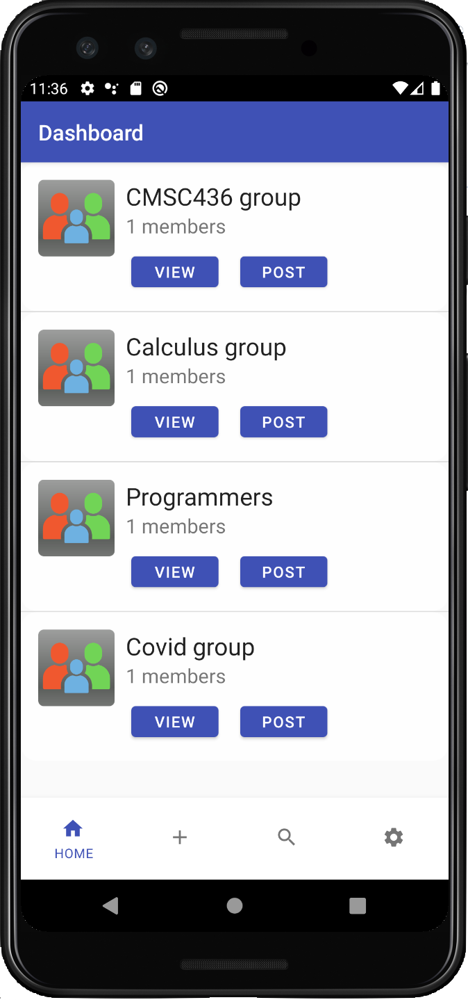
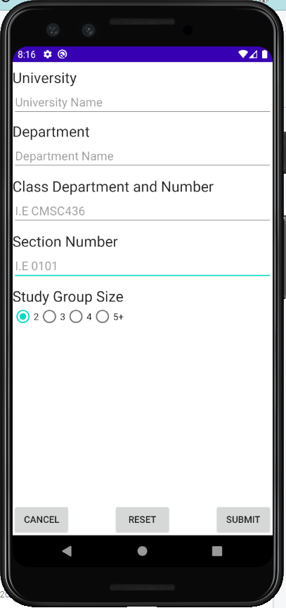
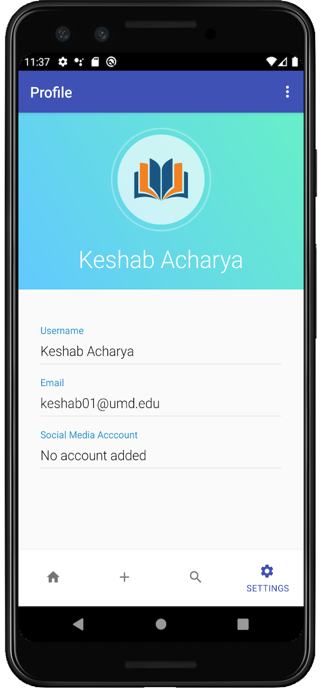

It used to be easy to find study groups, just go to class and talk with your neighbors. However, it’s kind of hard to do now that classes are online.
Slackr in an app that was built using Kotlin in Android Studio. It is a group matching app that lets users create a profile and match with other users who share their same study habits or the lack thereof.
You can also create a new group entirely with your study habits and other members with similar habits can join it. We have some features such as finding people with similar interests, making grouops with them, creating and adding posts to posts thread for the group, etc.
I am currently in the process of adding new features to the app. The app will soon be published to the Play Store and development will soon be started for App Store.